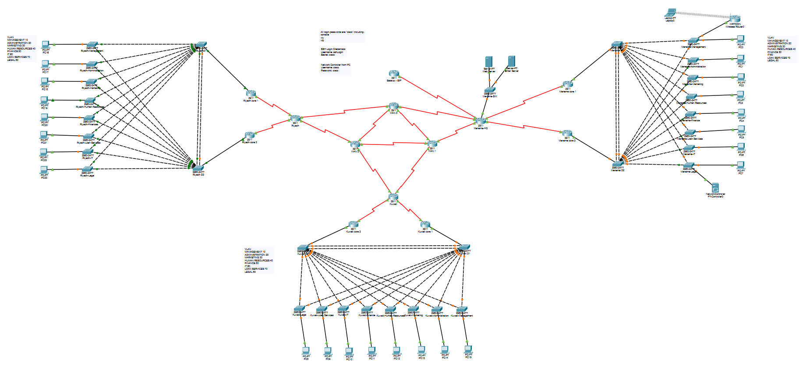
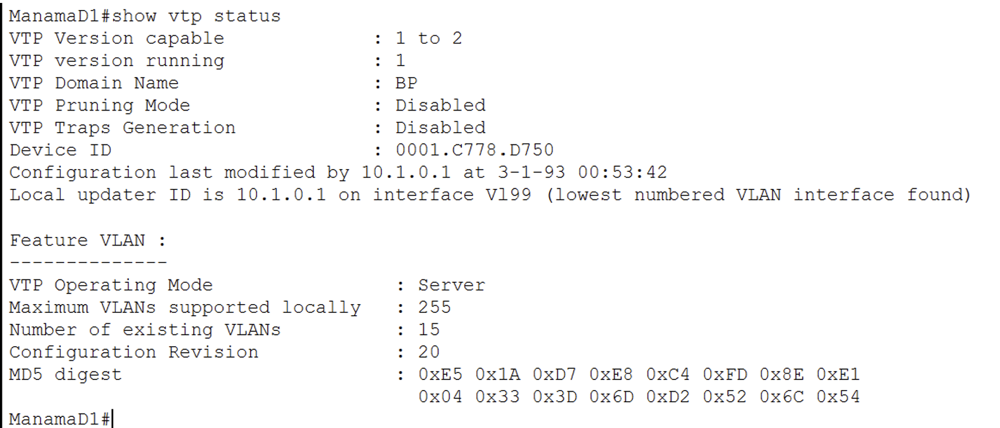
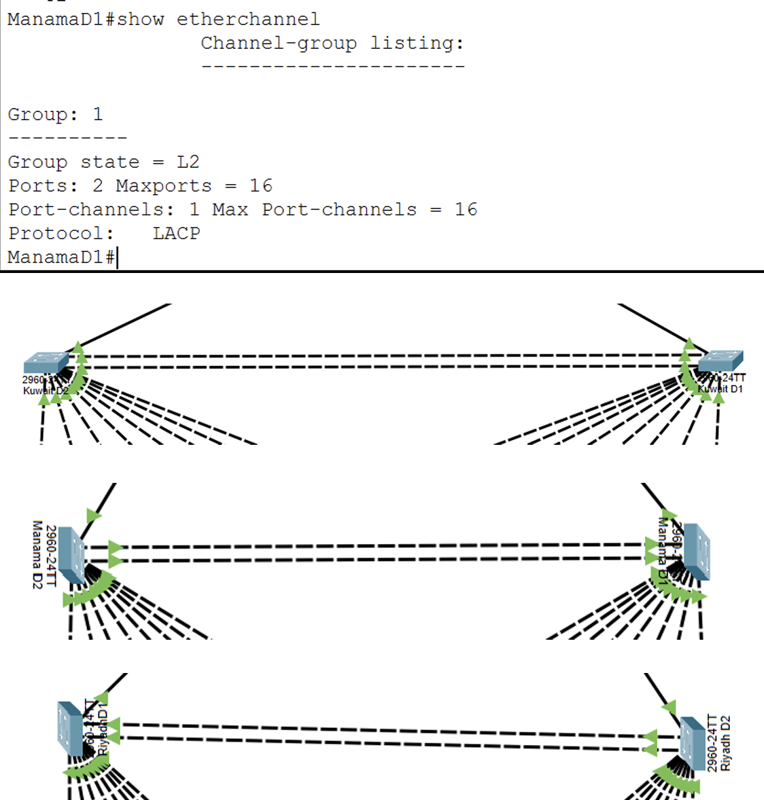
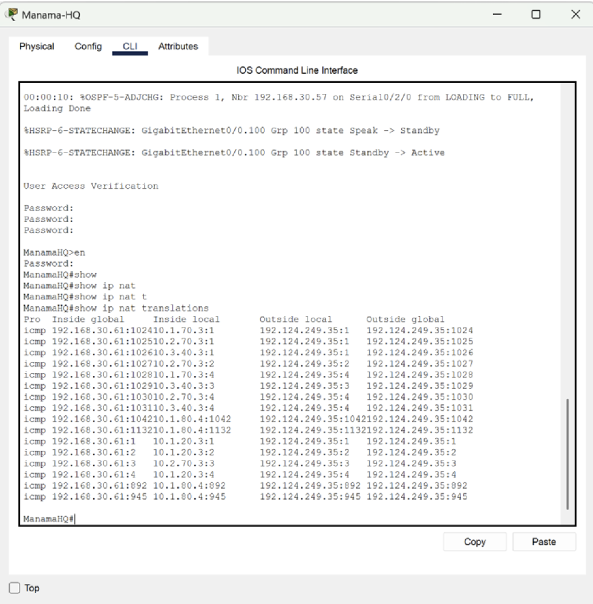

What the project set out to do
Design a scalable, secure multi-branch banking network where a single link or device failure never takes down branch connectivity, and sensitive departments stay isolated from the outside.
What I actually built
I architected the hierarchical multi-branch infrastructure connecting HQ with Riyadh and Kuwait. I structured the IPv4 addressing scheme around OSPF as the dynamic routing core, engineered VLAN segmentation across 11 departments using VTP server-client domains, and established high availability via EtherChannel and HSRP gateway redundancy. I also enforced PPP CHAP authentication on WAN links, sticky MAC port security, and a multi-layered ACL framework isolating financial subnets.
Documentation on file
Multi-site physical/logical topologies, live CLI verification (VTP revision sync, VLAN definitions, EtherChannel bundling, port security bindings, NAT translation tables), and 100% device health dashboard.

Multi-site topology
VTP / VLAN CLI output
EtherChannel bundling
NAT translation table